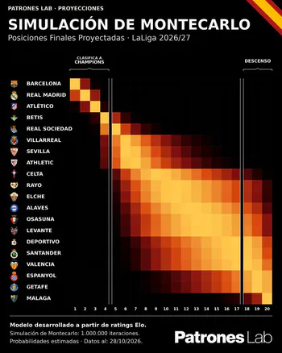
LaLiga 2026/27 · Mapa de calor das posições finais
Mapa das posições finais projetadas das equipas da LaLiga com um milhão de simulações de Monte Carlo.
Ver publicação ↗
Mapa das posições finais projetadas das equipas da LaLiga com um milhão de simulações de Monte Carlo.
Ver publicação ↗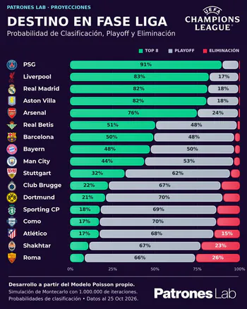
Simulações de Poisson e Monte Carlo para estimar as probabilidades de top 8, play-offs e eliminação.
Ver publicação ↗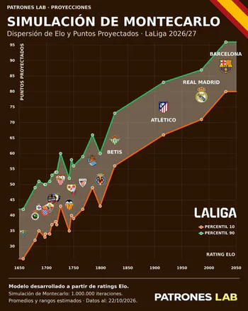
Comparação entre rating Elo, pontos projetados e intervalos de resultados simulados para cada equipa.
Ver publicação ↗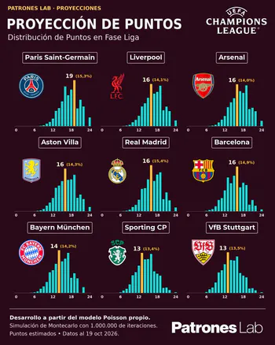
Histogramas dos pontos simulados para analisar os resultados mais frequentes da competição.
Ver publicação ↗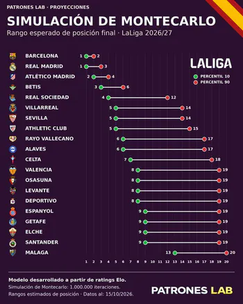
Comparação das posições finais através de percentis e intervalos mais prováveis.
Ver publicação ↗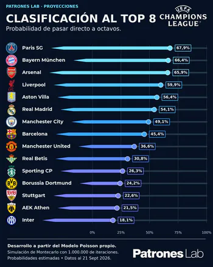
Apresentação do modelo Poisson e das simulações de Monte Carlo para estimar resultados e classificação.
Ver publicação ↗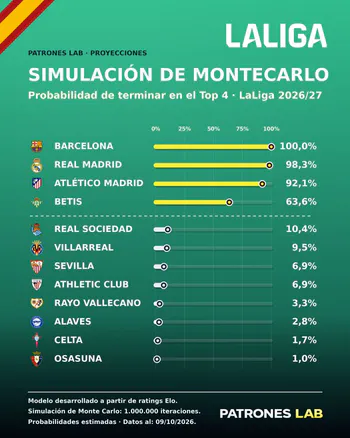
Publicação no LinkedIn sobre simulações. Os detalhes específicos ainda não foram confirmados.
Ver publicação ↗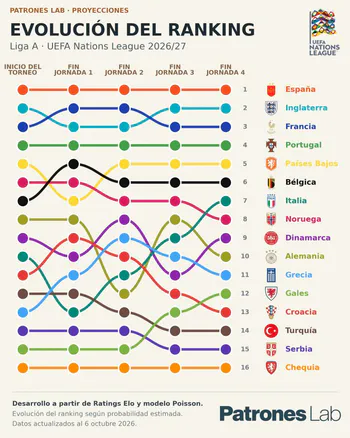
Evolução das posições estimadas das seleções ao longo das jornadas.
Ver publicação ↗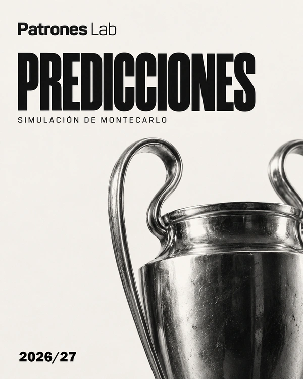
Modelo de golos de Poisson e simulações de Monte Carlo para projetar resultados.
Ver projeto em desenvolvimento ↗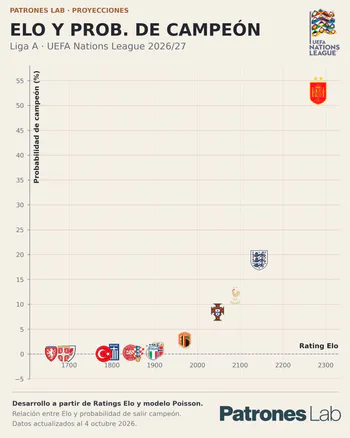
Comparação entre rating Elo e probabilidades estimadas de vencer a Nations League por seleção.
Ver publicação ↗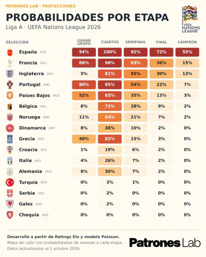
Probabilidades de avançar em cada fase, dos grupos até à final.
Ver publicação ↗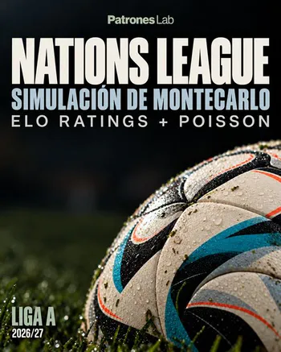
Apresentação de um modelo de simulação para analisar probabilidades da UEFA Nations League.
Ver publicação ↗Análise da atividade aérea nas Baleares com dados públicos da AENA.
Ver publicação ↗Simulação das probabilidades de vencer grupos, passar eliminatórias e conquistar o título.
Ver projeto ↗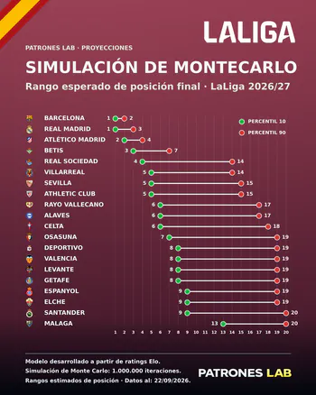
Atualização das probabilidades das posições finais com novos resultados e ratings Elo.
Ver publicação ↗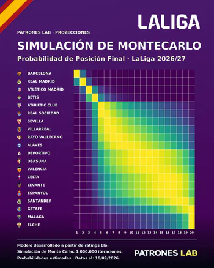
Publicação no LinkedIn sobre a simulação da LaLiga. Detalhes por confirmar.
Ver publicação ↗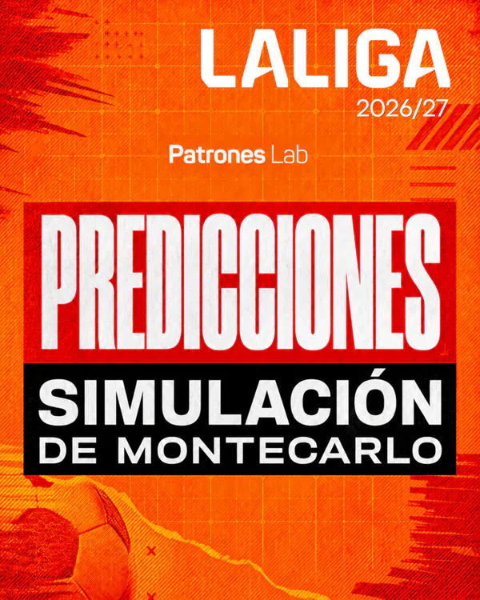
Simulação de cenários para estimar posições e resultados finais na LaLiga.
Ver projeto em desenvolvimento ↗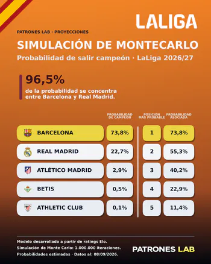
Publicação no LinkedIn sobre cenários da LaLiga. Detalhes por confirmar.
Ver publicação ↗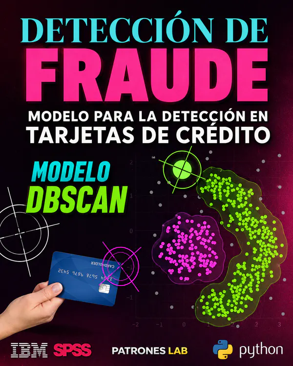
Aplicação de DBSCAN para identificar grupos e transações atípicas.
Ver publicação ↗Estudo das viagens de táxi registadas em Chicago para detetar padrões temporais, territoriais e económicos.
Ver publicação ↗Modelo de classificação para analisar transações e sinais associados a fraude.
Ver publicação ↗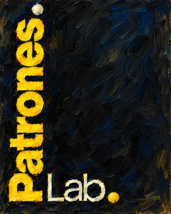
Apresentação do Patrones Lab e dos seus projetos, modelos e visualizações.
Ver publicação ↗Comparação de técnicas de classificação para estudar danos económicos causados pelo tempo.
Ver projeto em desenvolvimento ↗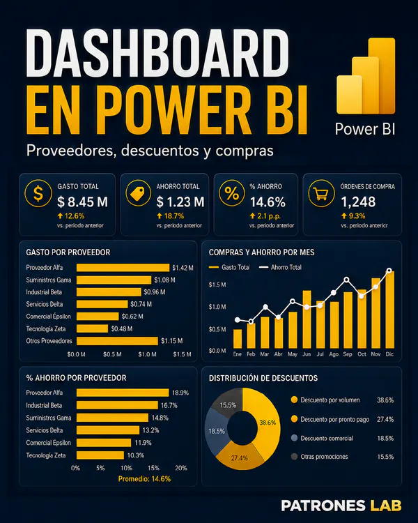
Dashboard para analisar despesas, evolução, categorias e distribuição geográfica.
Ver projeto ↗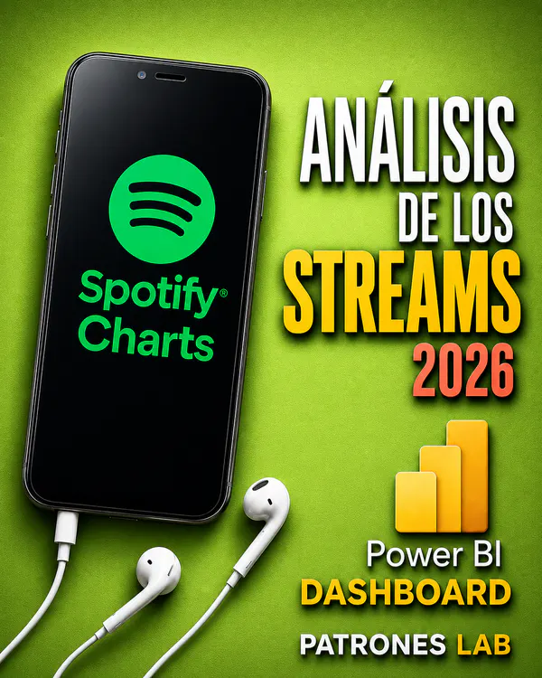
Dashboard das classificações do Spotify para analisar reproduções, tendências e países.
Ver projeto em desenvolvimento ↗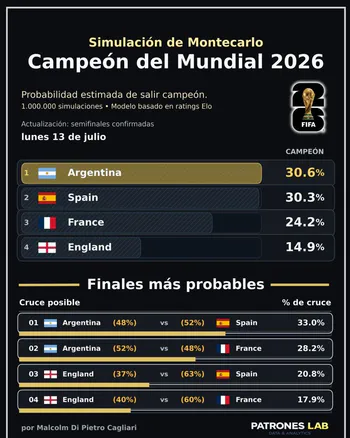
Atualização das probabilidades de vitória e dos possíveis confrontos na final.
Ver publicação ↗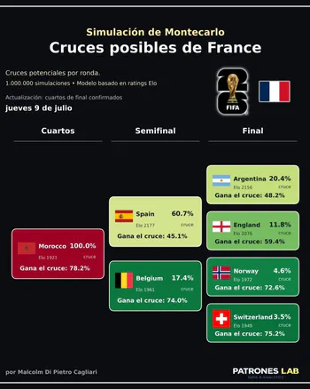
Simulação de confrontos nos quartos de final e probabilidades de progressão.
Ver publicação ↗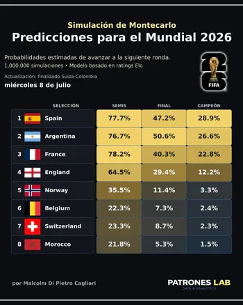
Estimativa das probabilidades de chegar às meias-finais, final e vencer o Mundial.
Ver publicação ↗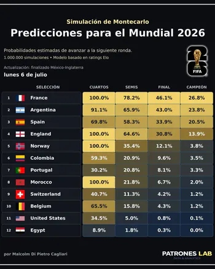
Atualização das probabilidades de progressão e título após os dezasseis-avos de final.
Ver publicação ↗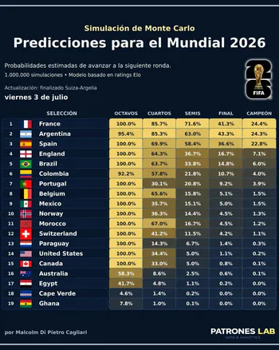
Projeção de probabilidades por ronda com os resultados disponíveis na altura.
Ver publicação ↗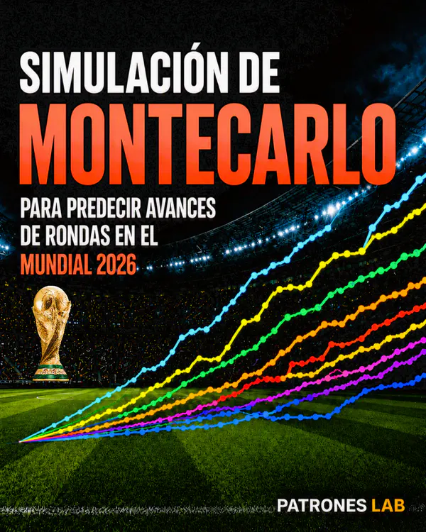
Modelo para estimar as probabilidades de progressão e vitória de cada seleção.
Ver projeto ↗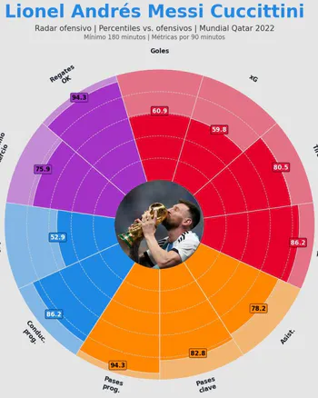
Comparação dos jogadores argentinos por percentis de posição e métricas por 90 minutos.
Ver publicação ↗Comparação visual dos desempenhos individuais com gráficos radar de percentis.
Ver projeto ↗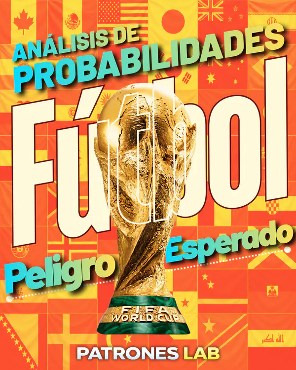
Análise de como as ações com bola alteraram o perigo na final Argentina–França.
Ver publicação ↗Artigo sobre futebol e probabilidades no jogo Argentina–França de Qatar 2022.
Ler artigo ↗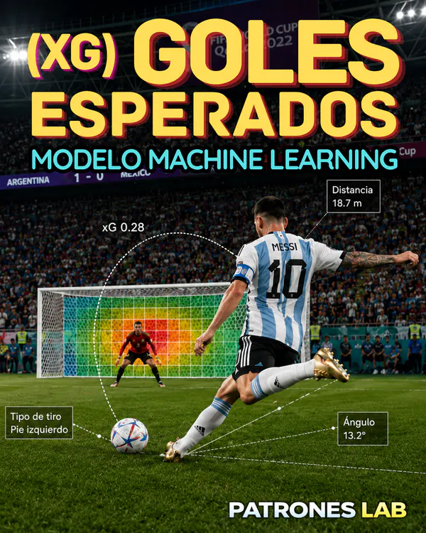
Modelo probabilístico para estimar a probabilidade de golo de cada remate no Mundial.
Ver projeto ↗Análise do perigo criado pelas ações com bola durante o Mundial Qatar 2022.
Ver projeto ↗Dashboard interativo para explorar procura e trajetos de viagens de táxi registadas em Chicago.
Ver publicação ↗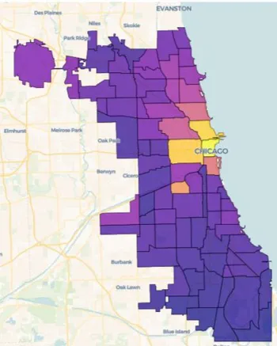
Mapa da concentração de viagens nas zonas de Chicago baseado em dados abertos.
Ver publicação ↗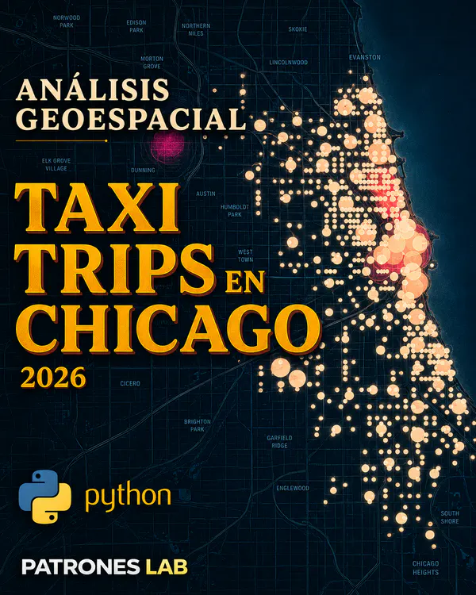
Análise das zonas de origem e destino, percursos e concentração espacial das viagens.
Ver publicação ↗Mapa das zonas mais ativas e fluxos origem–destino das viagens registadas.
Ver projeto ↗Dashboard interativo para analisar atividade, tarifas e trajetos.
Ver projeto ↗Análise das variações das viagens registadas por dia, hora, distância e tarifa.
Ver publicação ↗Artigo sobre a rede urbana de viagens de táxi de Chicago com dados abertos.
Ler artigo ↗Análise de procura, trajetos e tarifas das viagens de táxi registadas.
Ver projeto ↗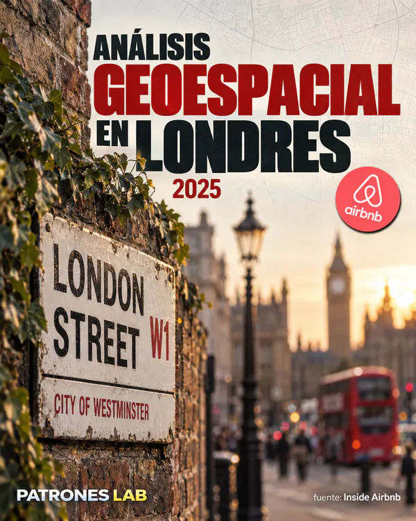
Análise dos preços por localização, distância ao centro e características dos bairros.
Ver projeto ↗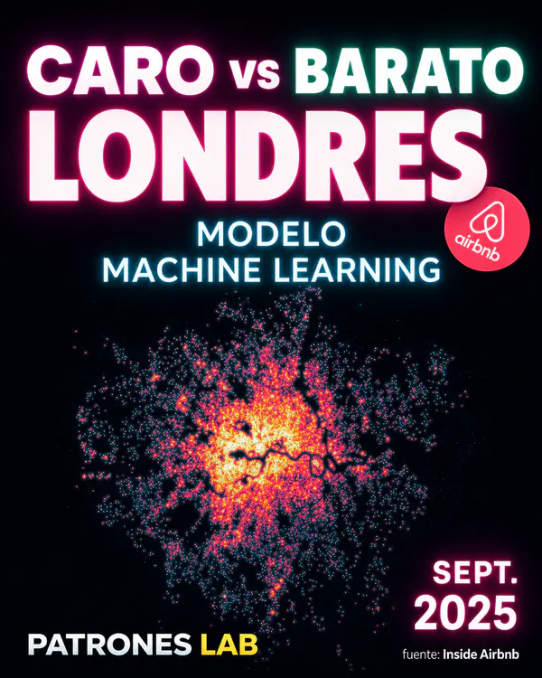
Modelo que distingue alojamentos relativamente caros ou económicos por tipo de quarto.
Ver projeto ↗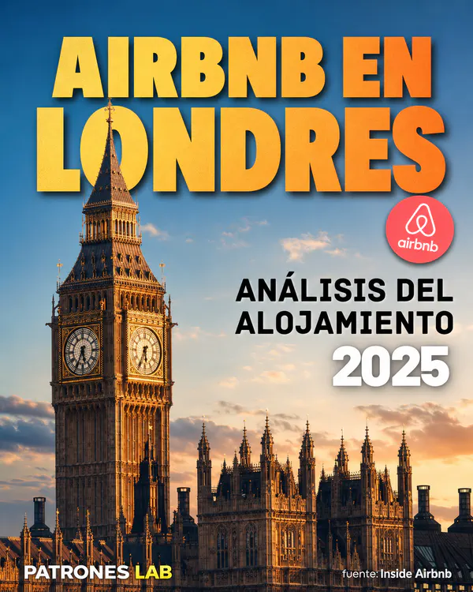
Comparação dos preços e da distribuição territorial dos alojamentos Airbnb em Londres.
Ver publicação ↗Artigo sobre os preços de Airbnb em Londres e a sua distribuição espacial.
Ler artigo ↗Exploração de preços, tipos, disponibilidade e diferenças entre bairros de Londres.
Ver projeto ↗Análise de passageiros, ligações e sazonalidade nos aeroportos das Baleares.
Ver publicação ↗Artigo sobre turismo nas Baleares com dados abertos da AENA.
Ler artigo ↗Análise do tráfego aéreo de Maiorca, Ibiza e Menorca com dados públicos AENA.
Ver projeto ↗Agrupamento por densidade para identificar transações atípicas e possíveis padrões de fraude.
Ver projeto ↗Classificação supervisionada de transações para estimar o risco de fraude.
Ver projeto ↗Segmentação de transações com K-means para explorar comportamentos atípicos associados a fraude.
Ver projeto ↗